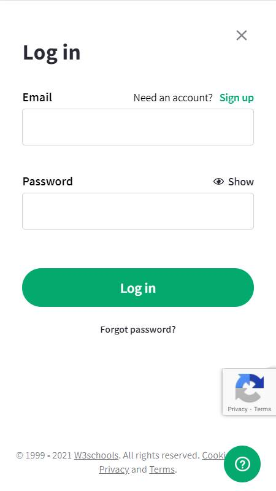
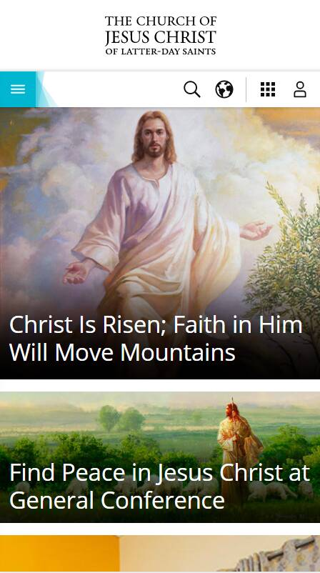
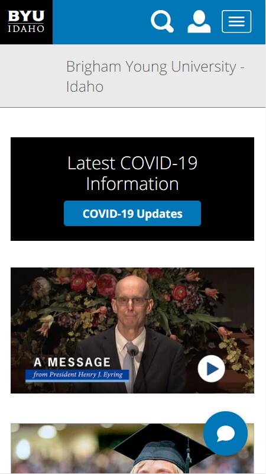

Design Principles
Proximity
Orgainzation | W3Schools
Link to Page | w3schools.com/log-in
Explanation | The W3Schools login page exemplifies proximity because all of the text entry boxes are neatly labeled and spaced apart.
Alignment
Organization | Church of Jesus Christ of Latter-day Saints
Link to Page | churchofjesuschrist.org
Explanation | The Church of Jesus Christ homepage exemplifies alignment becuase all of the items are neatly aligned and organized. The navigation bar is is especially aligned.
Contrast
Organization | Brigham Young University - Idaho
Link to Page | byui.edu
Explanation | The BYU-Idaho homepage exemplifies contrast becuase all the text and icons are easily readable and pop out on the page.